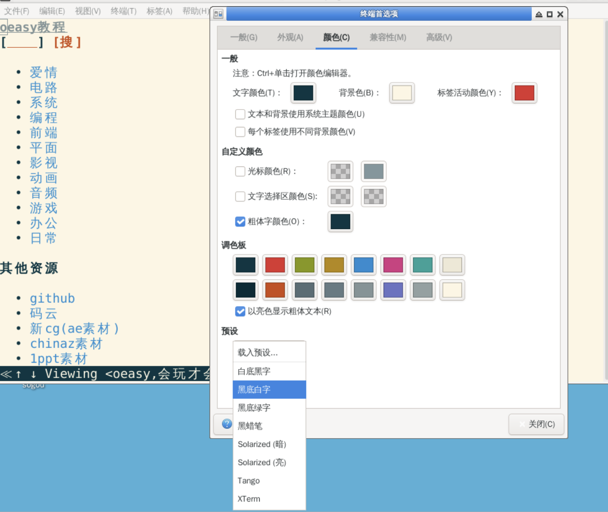
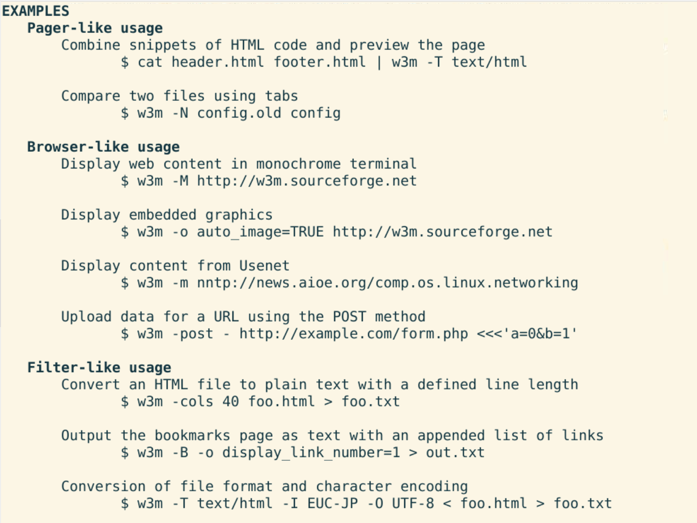
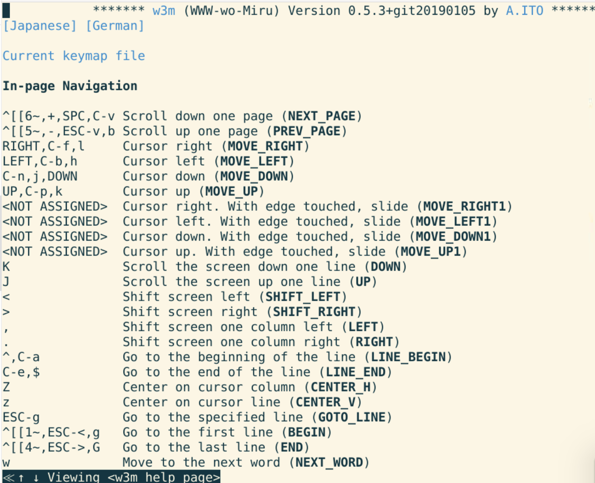

分屏工具tmux
回忆
- 我们上次使用了tmux
- tmux连接不同服务器可以有不同的session
- 同一个session里面可以有多个窗口window
- 只用新建和切分window就够用了
- ctrl+b c新建窗口
- ctrl+b %或"拆分窗格pane
- ctrl+b 方向键选择窗格pane
- ctrl+b x 关闭窗格pane
- 还有什么好玩的么？
终端浏览器
- 安装
- sudo apt install w3m
- sudo apt install w3m-img

常用方法

- 远程和本地的html都可以访问
- 这个浏览器浏览有什么快捷键吗？
查看帮助

总结 🤨
- 这次我们研究了终端上的浏览器
- 还有什么好玩的吗？
- 下次再说！👋